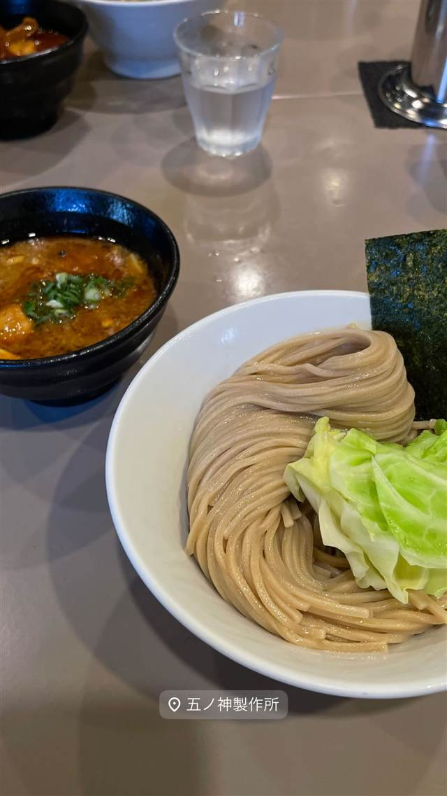
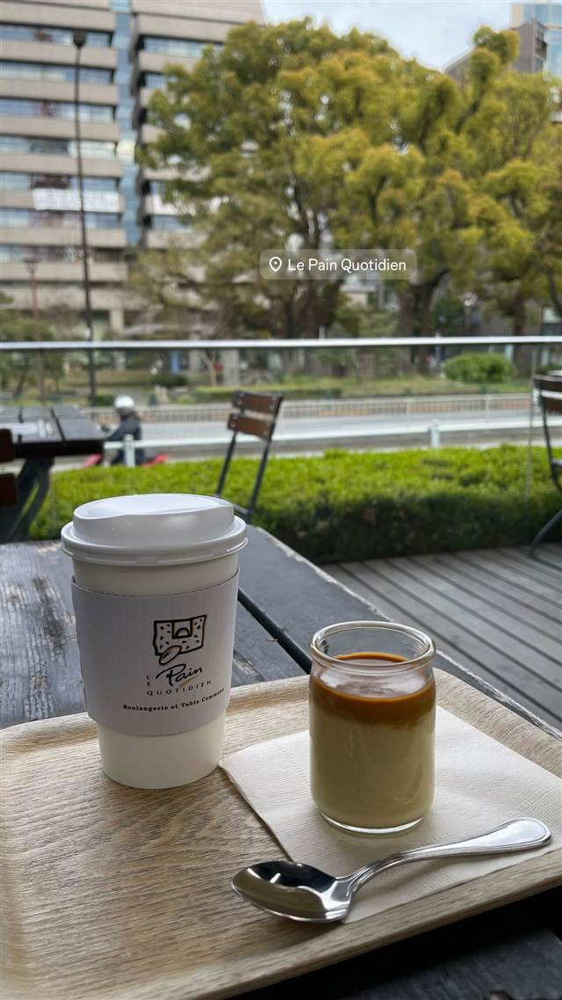
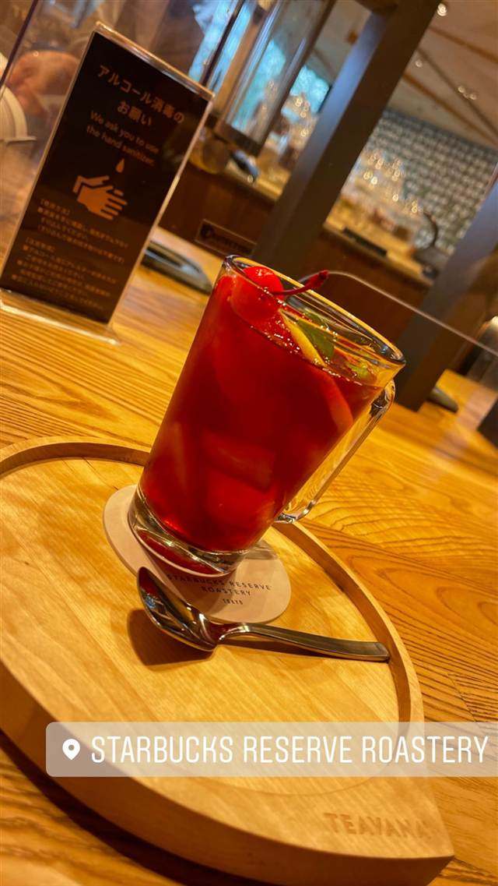
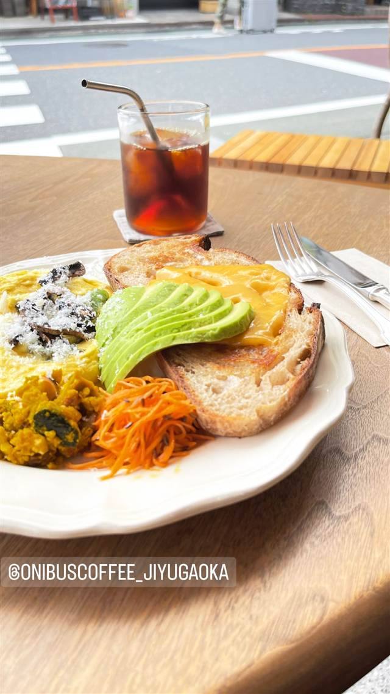

★ また行きたいコーヒーで1位
AALIYA COFFEE ROASTERS
37年続く本店譲りのフレンチトーストを並ばず味わえる
Aaliya Coffee Roasters
新宿三丁目の老舗喫茶店「Cafe AALIYA」が、行列を避けたい常連客の声に応えて2022年に開いた姉妹店。本店譲りのふわとろフレンチトーストを、コーヒーに特化した落ち着いた空間で並ばずに味わえる。
TRIVIA
豆知識
- 本店「Cafe AALIYA」は37年続く新宿の老舗喫茶店
- 行列を避けたい常連客の声から生まれた姉妹店
- フレンチトーストの美味しさはパンと卵液の黄金比が支える
REVIEWS
世間の評判
3.75食べログ
フレンチトーストの香ばしさが人気
- バターとバニラの香ばしい香りが漂うフレンチトーストの食感を評価する声が多い
- 平日限定のセットは値段の割に量があり満足度が高いという声が多い
- 混雑時は階段の下まで列ができるほど待つこともあるという声が多い
食べログ 口コミ3436件
| 創業 | 2022年オープン（本店「Cafe AALIYA」は37年の歴史） |
|---|---|
| 系譜 | 新宿三丁目の老舗喫茶店「Cafe AALIYA」の姉妹店として、同じビルの2階に開店 |
| 看板 | フレンチトースト（フレッシュフルーツ／ポーチドエッグの2種） |
| こだわり | パンと卵液（アパレイユ）の黄金比にこだわり、本店伝来の味を保ちながら素材・配合を微調整。自家焙煎のスペシャルティコーヒーも提供 |
| どこから | 都心 |
| 行くなら | 行列 |
| 営業時間 | 月〜金 09:00-20:30 土・日 09:00-21:00 |
| 予算 | 昼 ¥1,000～¥1,999 夜 ¥1,000～¥1,999 |
| 定休日 | 元日のみ |
| 予約 | 予約不可 |
| 場所 | 新宿三丁目 東京都新宿区新宿3丁目 山本ビル2F |
| メモ | 本店は行列必至だが、姉妹店では並ばずに同じ味わいのフレンチトーストを楽しめる |
食べたもの：フレンチトースト
NEARBY
近い店・同じ系統の店
-
 ★
コーヒー 保田駅
音楽と珈琲の店 岬
鋸山の湧き水でコーヒーを淹れ、その水は店の外に持ち出せない
昼 ～¥999
★
コーヒー 保田駅
音楽と珈琲の店 岬
鋸山の湧き水でコーヒーを淹れ、その水は店の外に持ち出せない
昼 ～¥999
-

★ つけ麺 新宿三丁目駅 つけ麺 五ノ神製作所 食べログ百名店に選ばれた海老の旨み凝縮スープのつけ麺 昼 ¥1,000～¥1,999 夜 ¥1,000～¥1,999 -

コーヒー 御成門・浜松町・大門 ル・パン・コティディアン 芝公園店 ベルギー発、1990年創業のベーカリーで東京タワー望むテラス朝食 夜 ¥3,000～¥3,999 -

コーヒー 中目黒・池尻大橋 スターバックス リザーブ ロースタリー東京 世界5番目・北米外初の旗艦店で隈研吾設計の17m銅製焙煎機がある 昼 ¥1,000～¥1,999 夜 ¥1,000～¥1,999 -

コーヒー 自由が丘 ONIBUS COFFEE 自由が丘店 奥沢発の人気豆、自由が丘初のカフェスタイル店でトースト 昼 ～¥999 夜 ～¥999 -
 コーヒー 桜新町駅
OGAWA COFFEE LABORATORY 桜新町
小川珈琲の新業態で楽しむコーヒーと炭火焼き料理のペアリング
昼 ¥1,000～¥1,999 夜 ¥3,000～¥3,999
コーヒー 桜新町駅
OGAWA COFFEE LABORATORY 桜新町
小川珈琲の新業態で楽しむコーヒーと炭火焼き料理のペアリング
昼 ¥1,000～¥1,999 夜 ¥3,000～¥3,999